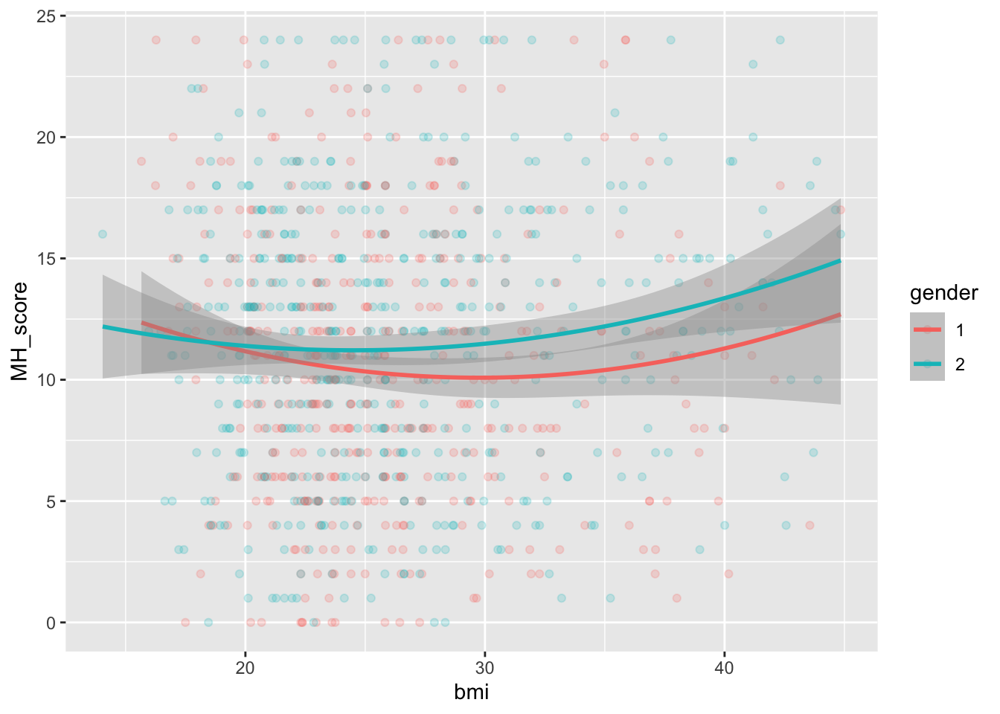

Portfolio 2
2026-01-27
Project Description
The Substance Abuse and Mental Health Services Administration (SAMHSA) pulbishes a yearly National Survey on Drug Use and Health (NSDUH). It is an nationally representative, open-access, public-use dataset that is designed to help researchers and clinicians gain a better understanding of the state of mental health (MH) and substance used disorders (SUDs) in America. Essentially, the NSDUH “is a nationwide survey that samples the general population, 12 and older, on the use of tobacco, alcohol, and drugs, mental health, and other health related issues in the United States.”
Although it is used primarily to monitor trends in MH and SUDs and inform policies and resource allocation strategies. It also happens to be a great data set to practice data cleaning, wrangling, visualization, and analysis due to its large sample size, breadth of items, and strange coding of variables.
A few notes before we dive in and explore this dataset: 1. Future analyses will address sampling weights. 2. There are excluded personnel in this dataset (prisoners, active-duty military members, etc…) 3. Although I would love to have explored more variables and tested specific hypotheses, this was not possible given the time frame. Future work will explore specific theories. 4. You’ll notice that I’m creating many graphs, and looking at seemingly random variables and testing what seems interesting. This is not good practice if the goal is inferential testing. I am not worried at type 1 errors in this specific piece, given it is mostly to explore a dataset I found to be interesting for practice.
For more information on the variables used below, please see the codebook attached in the p02 folder.
Setting Up
First, I load all the libraries I think I might use (even if they go unused, I prefer this over having to load the libraries on and on as I go)
##
## Attaching package: 'dplyr'## The following objects are masked from 'package:stats':
##
## filter, lag## The following objects are masked from 'package:base':
##
## intersect, setdiff, setequal, union## Loading required package: grid## Loading required package: Matrix## Loading required package: survival##
## Attaching package: 'survey'## The following object is masked from 'package:graphics':
##
## dotchart## ── Attaching core tidyverse packages ──────────────────────── tidyverse 2.0.0 ──
## ✔ forcats 1.0.1 ✔ stringr 1.6.0
## ✔ lubridate 1.9.4 ✔ tibble 3.3.1
## ✔ purrr 1.2.1 ✔ tidyr 1.3.2
## ✔ readr 2.1.6## ── Conflicts ────────────────────────────────────────── tidyverse_conflicts() ──
## ✖ tidyr::expand() masks Matrix::expand()
## ✖ dplyr::filter() masks stats::filter()
## ✖ dplyr::lag() masks stats::lag()
## ✖ tidyr::pack() masks Matrix::pack()
## ✖ tidyr::unpack() masks Matrix::unpack()
## ℹ Use the conflicted package (<http://conflicted.r-lib.org/>) to force all conflicts to become errors##
## Attaching package: 'rstatix'
##
## The following object is masked from 'package:stats':
##
## filterData Cleaning
If you have ever looked through this dataset, you’ll notice a wide-range of quirks that require some cleaning. Here, I’m interested in the overall mental health score, and removing the responses that are skips and such.
# Clean mental health score
df <- NSDUH_2024 %>%
mutate(
MH_score = as.numeric(KSSLR6MONED),
MH_score = ifelse(MH_score %in% c(94, 97, 98, 99), NA, MH_score)
) %>%
# Remove rows with missing MH_score or AGE3
filter(!is.na(MH_score), !is.na(AGE3))Next, I want to look at young adults. The original entries are formatted strangely (to me) and, although not best practice, I decide to lump them into three big groups.
# Recode AGE3 into 3 broad adult age groups
df <- df %>%
mutate(
AGE_GROUP = case_when(
AGE3 %in% 4:6 ~ "Young adult", # 18–29
AGE3 %in% 7:9 ~ "Middle age", # 30–64
AGE3 == 10 | AGE3 == 11 ~ "Older adult"
),
AGE_GROUP = factor(AGE_GROUP, levels = c("Young adult", "Middle age", "Older adult"))
)
# Check counts
table(df$AGE_GROUP)##
## Young adult Middle age Older adult
## 13683 21753 10385Question 1: Is age group related to mental health scores?
# let's plot it!
ggplot(df, aes(x = MH_score, fill = AGE_GROUP)) +
geom_density(alpha = 0.4) +
labs(
x = "Mental Health Score",
y = "Density",
fill = "Age Group",
title = "Mental Health Scores by Age Group"
) +
theme_minimal()
# I love inferential testing!!
# Kruskal-Wallis test --> using this since our data is very skewed
kruskal.test(MH_score ~ AGE_GROUP, data = df)##
## Kruskal-Wallis rank sum test
##
## data: MH_score by AGE_GROUP
## Kruskal-Wallis chi-squared = 3412.5, df = 2, p-value < 2.2e-16## # A tibble: 1 × 5
## .y. n effsize method magnitude
## * <chr> <int> <dbl> <chr> <ord>
## 1 MH_score 45821 0.0744 eta2[H] moderate# Pairwise Wilcoxon comparisons
pairwise.wilcox.test(df$MH_score, df$AGE_GROUP, p.adjust.method = "bonferroni")##
## Pairwise comparisons using Wilcoxon rank sum test with continuity correction
##
## data: df$MH_score and df$AGE_GROUP
##
## Young adult Middle age
## Middle age <2e-16 -
## Older adult <2e-16 <2e-16
##
## P value adjustment method: bonferroniConclusion: There is a relationship between age group and mental health scores. Young adults have the higher mental health scores than middle aged and older adults. However, the distribution is highly skewed for all three groups (which is why I used a Kruskal-Wallist test).
Data Cleaning and Discovery Continued
The young adult data stood out to me in the graph above. I wanted to explore how these young adults are doing in more depth.
As I was going through the codebook, a few variables stood out to me. Here, I’m cleaning them just like I did for the mental health scores, and I’m renaming them for clarity. I’m also creating a new df with just the young adult age group. You’ll notice I did not use every variable, but I wanted to clean them nonetheless in case I might use them.
# lots of cleaning to do
young_adults <- df %>%
filter(AGE_GROUP == "Young adult")
young_adults <- young_adults %>%
mutate(
POVERTY3 = ifelse(POVERTY3 %in% c(94, 97, 98, 99), NA, POVERTY3),
HRTCONDEV2 = ifelse(HRTCONDEV2 %in% c(94, 97, 98, 99), NA, HRTCONDEV2),
BMI2 = ifelse(BMI2 %in% c(94, 97, 98, 99), NA, BMI2),
CASURCVR = ifelse(CASURCVR %in% c(94, 97, 98, 99), NA, CASURCVR),
CAMHPROB = ifelse(CAMHPROB %in% c(94, 97, 98, 99), NA, CAMHPROB),
HEALTH2 = ifelse(HEALTH2 %in% c(94, 97, 98, 99), NA, HEALTH2),
IRSEX = ifelse(IRSEX %in% c(94, 97, 98, 99), NA, IRSEX),
HLCNOTYR = ifelse(HLCNOTYR %in% c(94, 97, 98, 99), NA, HLCNOTYR),
GOVTPROG = ifelse(GOVTPROG %in% c(94, 97, 98, 99), NA, GOVTPROG)
) %>%
rename(
poverty_level = POVERTY3,
heart_condition = HRTCONDEV2,
bmi = BMI2,
drug_problem = CASURCVR,
mental_health_problem = CAMHPROB,
overall_health = HEALTH2,
gender = IRSEX,
no_health_insurance = HLCNOTYR,
gov_program = GOVTPROG
) %>%
# Convert categorical predictors to factors
mutate(
heart_condition = factor(heart_condition),
drug_problem = factor(drug_problem),
mental_health_problem = factor(mental_health_problem),
gender = factor(gender),
no_health_insurance = factor(no_health_insurance),
gov_program = factor(gov_program)
) %>%
# Remove any rows with missing values in DV or predictors
drop_na(MH_score, poverty_level, heart_condition, bmi, drug_problem,
mental_health_problem, overall_health, gender, no_health_insurance, gov_program)
# now we save this
young_adults <- young_adults %>%
select(MH_score, poverty_level, heart_condition, bmi, drug_problem,
mental_health_problem, overall_health, gender, no_health_insurance, gov_program)Now that we’re focusing on the young adults, I want to see what the distribution, in the form of a histogram, looks like for mental health scores in that group.
## # A tibble: 6 × 10
## MH_score poverty_level heart_condition bmi drug_problem
## <dbl> <dbl> <fct> <dbl> <fct>
## 1 15 3 2 28.9 1
## 2 4 1 2 29.0 2
## 3 9 3 1 19.7 1
## 4 16 3 1 20.1 2
## 5 11 3 2 32.5 2
## 6 20 3 2 18.9 2
## # ℹ 5 more variables: mental_health_problem <fct>, overall_health <dbl>,
## # gender <fct>, no_health_insurance <fct>, gov_program <fct>## MH_score poverty_level heart_condition bmi drug_problem
## Min. : 0.0 Min. :1.000 1 : 42 Min. :14.04 1:631
## 1st Qu.: 7.0 1st Qu.:1.000 2 :908 1st Qu.:21.95 2:319
## Median :11.0 Median :3.000 85: 0 Median :25.09
## Mean :11.2 Mean :2.277 Mean :26.65
## 3rd Qu.:15.0 3rd Qu.:3.000 3rd Qu.:29.51
## Max. :24.0 Max. :3.000 Max. :52.25
## mental_health_problem overall_health gender no_health_insurance gov_program
## 1:842 Min. :1.000 1:430 1 :132 1:228
## 2:108 1st Qu.:2.000 2:520 2 :817 2:722
## Median :3.000 85: 1
## Mean :2.627
## 3rd Qu.:3.000
## Max. :4.000# this loks pretty normally distributed among young people
ggplot(young_adults, aes(MH_score)) +
geom_histogram(bins = 30, color = "plum4", fill = "plum")
Question 2: To what degree is overall heatlh related to mental health in young adults?
I want to look at overall health and mental health. I’m reverse scoring overall health so that 4 means great health and 1 means poor health. Then, I visualize that relationship between mental health and overall health with a jitter plot.
# mutate so it makes more sense
young_adults <- young_adults %>%
mutate(overall_health_rev = recode(overall_health,
`1` = 4,
`2` = 3,
`3` = 2,
`4` = 1
))
# relationship btwn overall and MH
ggplot(young_adults, aes(factor(overall_health_rev), MH_score)) +
geom_jitter(aes(colour = overall_health_rev), width = .15, alpha = .3) +
labs(title = "Overall Health vs Mental Health",
subtitle = "young adults: age 18-29",
)
Our visualization demonstrates that there is in fact a relationship between overall health and mental health in young adults (which should not come as a surprise)
Data Cleaning Continued
Before we visualize and analyze more variables, I need to understand what class each variable is in, as that will help me when creating certain plots. I’m tidying up the data now and making it longer (which decreases the amount of columns).
## MH_score poverty_level heart_condition
## "numeric" "numeric" "factor"
## bmi drug_problem mental_health_problem
## "numeric" "factor" "factor"
## overall_health gender no_health_insurance
## "numeric" "factor" "factor"
## gov_program overall_health_rev
## "factor" "numeric"newDF <- young_adults %>%
filter(bmi < 45) %>%
select(MH_score, no_health_insurance, gov_program, gender, overall_health_rev) %>%
mutate(overall_health_rev = factor(overall_health_rev, levels = 1:4,
labels = c("Poor", "Fair", "Good", "Excellent"))) %>%
pivot_longer(-MH_score, names_to = "predictor", values_to = "group")Data Visualization
Now, you’ll see density ridges for various variables. This helps me determine if anything stands out and might be interesting to analyze more closely.
ggplot(newDF, aes(x = MH_score, y = group)) +
geom_density_ridges2() +
facet_wrap(~ predictor, scales = "free_y") +
labs(y = "Group", x = "Mental Health Score")## Picking joint bandwidth of 1.5## Picking joint bandwidth of 1.58## Picking joint bandwidth of 1.66## Picking joint bandwidth of 1.71
Question 3: What’s the relationship between Mental Health Scores and BMI in young adults?
The BMI distribution really stood out to me. First, I’m getting rid of BMI over 45, given that anything over that point may be a typo (if this were a real data analysis project, I would investigate this more carefully before ommitting these cases).
# the bmi one also really stood out to me
young_adults_bmi <- young_adults %>% filter(bmi < 45)
ggplot(young_adults_bmi, aes(x = bmi, y = MH_score)) +
geom_point(alpha = .25) +
geom_smooth(method = "loess") +
labs(x = "BMI", y = "Mental Health Score")## `geom_smooth()` using formula = 'y ~ x'
#
young_adults_bmi %>%
mutate(bmi_cat = cut(bmi, breaks = 4)) %>%
ggplot(aes(x = bmi_cat, y = MH_score)) +
stat_summary(fun = mean, geom = "point", size = 3) +
stat_summary(fun.data = mean_cl_boot, geom = "errorbar", width = .2) +
labs(x = "BMI category", y = "Mental Health Score")
##
## Call:
## lm(formula = MH_score ~ bmi + I(bmi^2), data = young_adults_bmi)
##
## Coefficients:
## (Intercept) bmi I(bmi^2)
## 18.98204 -0.61063 0.01129ggplot(young_adults_bmi, aes(x = bmi, y = MH_score)) +
geom_point(alpha = .2) +
geom_smooth(method = "gam", formula = y ~ s(x), size = 1.2) +
theme_minimal() +
labs(
title = "Curvilinear Association Between BMI and Mental Health",
x = "Body Mass Index (BMI)",
y = "Mental Health Score"
)## Warning: Using `size` aesthetic for lines was deprecated in ggplot2 3.4.0.
## ℹ Please use `linewidth` instead.
## This warning is displayed once per session.
## Call `lifecycle::last_lifecycle_warnings()` to see where this warning was
## generated.
At first, I found a curvilinear association. I wanted to verify whether that was really the case. I conducted a regression and plotted it again. It is in fact curvilinear! My suspicions are that individuals with higher BMIs likely face discrimination based on their weight, which can impact their mental health. Since obesity and weight gain is multifactorial, it is likely that factors like poverty, low social support, food deserts, and such contribute to this association as well. For individuals with lower BMI, this association may be due to body dysmorphia, eating disorders with severe weightloss involved, or other health issues that lead to weight loss.
Question 4: Is there a difference in BMI vs MH depending on gender?
# Question 4
ggplot(young_adults_bmi,
aes(x = bmi, y = MH_score, color = factor(overall_health_rev))) +
geom_point(alpha = 0.3) +
geom_smooth(method = "gam", formula = y ~ s(x), se = FALSE) +
labs(
x = "BMI",
y = "Mental Health Score",
color = "Overall Health",
title = "BMI vs MH, colored by Overall Health"
) +
theme_minimal()
# Plot BMI vs Mental Health by gender
ggplot(young_adults_bmi, aes(x = bmi, y = MH_score, color = gender)) +
geom_point(alpha = 0.3) +
geom_smooth(method = "gam", formula = y ~ s(x), se = FALSE) +
theme_minimal() +
labs(
title = "BMI vs Mental Health by Gender",
x = "Body Mass Index (BMI)",
y = "Mental Health Score",
color = "Gender"
)
Here’s what I’ve found so far: Among young adults, mental health is not linearly related to BMI; instead, both very low and very high BMI are associated with worse mental health, and this relationship varies by overall health and gender.
Modeling Gender
# Gender seemed interesting so lets model that.
model <- lm(
MH_score ~ bmi + I(bmi^2) + gender + overall_health_rev +
poverty_level + no_health_insurance,
data = young_adults_bmi
)
summary(model)##
## Call:
## lm(formula = MH_score ~ bmi + I(bmi^2) + gender + overall_health_rev +
## poverty_level + no_health_insurance, data = young_adults_bmi)
##
## Residuals:
## Min 1Q Median 3Q Max
## -12.5640 -3.7815 -0.1723 3.5646 17.0671
##
## Coefficients:
## Estimate Std. Error t value Pr(>|t|)
## (Intercept) 22.651619 3.348256 6.765 2.37e-11 ***
## bmi -0.370292 0.232545 -1.592 0.11165
## I(bmi^2) 0.006382 0.004006 1.593 0.11150
## gender2 0.359027 0.358466 1.002 0.31682
## overall_health_rev -2.022966 0.204119 -9.911 < 2e-16 ***
## poverty_level -0.644479 0.212466 -3.033 0.00249 **
## no_health_insurance2 -0.365996 0.514165 -0.712 0.47675
## no_health_insurance85 -8.098747 5.426067 -1.493 0.13589
## ---
## Signif. codes: 0 '***' 0.001 '**' 0.01 '*' 0.05 '.' 0.1 ' ' 1
##
## Residual standard error: 5.339 on 920 degrees of freedom
## Multiple R-squared: 0.1305, Adjusted R-squared: 0.1239
## F-statistic: 19.73 on 7 and 920 DF, p-value: < 2.2e-16##
## Call:
## lm(formula = MH_score ~ bmi + I(bmi^2) + gender + overall_health_rev +
## poverty_level + no_health_insurance, data = young_adults_bmi)
##
## Standardized Coefficients::
## (Intercept) bmi I(bmi^2)
## NA -0.38616136 0.38771833
## gender2 overall_health_rev poverty_level
## 0.03139791 -0.31550444 -0.09506478
## no_health_insurance2 no_health_insurance85
## -0.02213711 -0.04660714BMI and overall health have a meaningful effects (curvilinear). Lack of health insurance was not significant in this model, but this may be due to the fact that the young adults in our sample have access to health insurance and poverty leve, and may not be representative of the population. There’s also the issue of multicollinearity, or that we don’t have the “right” predictors in the model.
But let’s look at gender moderation:
model_gender <- lm(
MH_score ~ bmi + I(bmi^2)*gender + overall_health_rev +
poverty_level,
data = young_adults_bmi
)
summary(model_gender)##
## Call:
## lm(formula = MH_score ~ bmi + I(bmi^2) * gender + overall_health_rev +
## poverty_level, data = young_adults_bmi)
##
## Residuals:
## Min 1Q Median 3Q Max
## -13.0715 -3.7219 -0.2036 3.5103 17.0215
##
## Coefficients:
## Estimate Std. Error t value Pr(>|t|)
## (Intercept) 22.241691 3.288666 6.763 2.4e-11 ***
## bmi -0.291881 0.231776 -1.259 0.20823
## I(bmi^2) 0.003687 0.004094 0.900 0.36811
## gender2 -1.133993 0.826820 -1.372 0.17055
## overall_health_rev -2.064001 0.203725 -10.131 < 2e-16 ***
## poverty_level -0.624217 0.211652 -2.949 0.00327 **
## I(bmi^2):gender2 0.002100 0.001046 2.008 0.04495 *
## ---
## Signif. codes: 0 '***' 0.001 '**' 0.01 '*' 0.05 '.' 0.1 ' ' 1
##
## Residual standard error: 5.332 on 921 degrees of freedom
## Multiple R-squared: 0.1318, Adjusted R-squared: 0.1262
## F-statistic: 23.31 on 6 and 921 DF, p-value: < 2.2e-16ggplot(young_adults_bmi, aes(x = bmi, y = MH_score, color = gender)) +
geom_point(alpha = 0.2) +
geom_smooth(method = "lm", formula = y ~ x + I(x^2))
Conclusion
The curvilinear relationship between mental health scores and BMI differs significantly by gender, and this u-shaped curved is more pronounced for women than men; however, there is not a main effect of gender. Moreover, the second model only explains for around 13% of variance (understandable).Interestingly, poverty level does have an effect here.
References: Center for Behavioral Health Statistics and Quality. (2025). 2024 National Survey on Drug Use and Health Public Use File Codebook, Substance Abuse and Mental Health Services Administration, Rockville, MD